1.1内积、夹角与柯西-施瓦茨不等式 全部通过
书上结论：|u·v| ≤ ‖u‖·‖v‖，等号当且仅当 u, v 线性相关。
要判决的命题：① 随机 20 万组向量里没有任何一组违背该不等式（相对超出 ≤ 1e-14）；② 逼近共线时 1-|cosθ| 的收敛阶是 O(ε²)；③ float64 下不同算法路径算出的 cos 存在 eps 量级分歧，工程实现必须 clip。
| 检查项 | 实测 | |
|---|---|---|
| PASS | 随机样本违背 C-S 的次数 = 0 | 全部 ≤ 上界；连最接近等号的一组也差 1.47e-09 相对量，反例 0 次 |
| PASS | 1-|cosθ| 相对 ε 的收敛阶 ≈ 2 | 最小二乘拟合斜率 2.000 |
| PASS | 三条等价公式的最大分歧在 eps 量级 | 最大分歧 5.551e-16，|cos| 越过 1 的样本数 0/50000 |
| PASS | cos 一旦越过 1，arccos 就废掉；clip 可救 | nextafter(1,2)=1.0000000000000002：arccos → nan，clip 后 → 0.0;（本例 5 万样本里真实越界 0 次，需要构造才能稳定复现） |
| PASS | Pearson r == 中心化后的夹角余弦 | cos = 0.723803672677, r = 0.723803672677, 差 4.44e-16 |
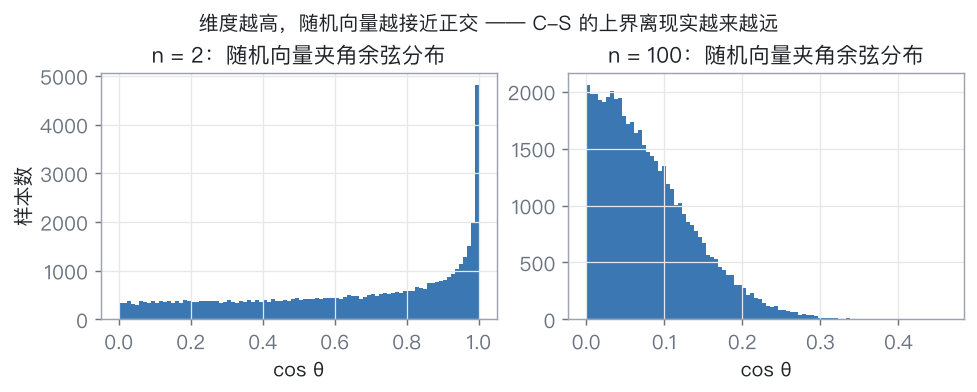
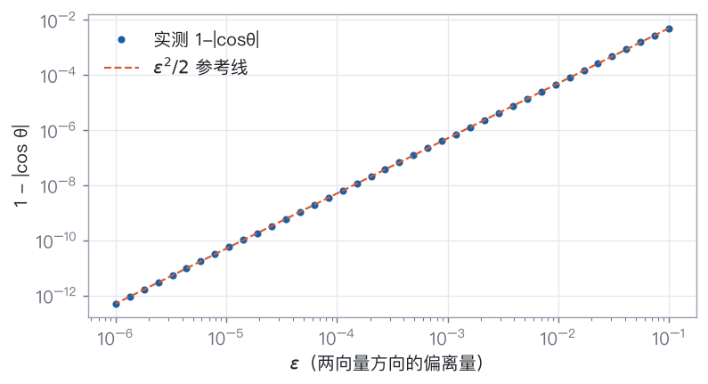
观察 · 图 1 左图 cos 在 ±1 处上翘是数学结果（二维随机方向的夹角余弦服从反正弦律 1/(π√(1-c²))），不是采样出错 —— 这种「先怀疑代码还是先怀疑直觉」的分辨能力，正是写代码建直觉要练的东西。
观察 · 不等式在浮点世界依然站得住（20 万样本无反例），但它给的是上界，不是典型值：n=100 时随机两向量的 |cosθ| 几乎恒小于 0.3，这条正好解释了「高维里距离集中、余弦相似度失去区分度」。
坑 · 工程实现一律先 np.clip(c, -1, 1) 再取 arccos：本例 5 万样本没能自然造出越界，但 nearest-after(1.0) 这个值就让 arccos 直接返回 nan —— 属于「极少发生但一发生就污染整条链路」的类型。
坑 · 量纲差六个数量级时（本例 u~1e3、v~1e-3）误差会明显放大，做特征工程时先归一化再算相似度是硬规矩。
1.2矩阵乘法 = 线性映射的复合 全部通过
书上结论：(AB)x = A(Bx)，复合映射对应矩阵乘积；乘法不可交换，但满足结合律与分配律。
要判决的命题：① 复合等式在浮点下成立到机器精度；② 随机矩阵的 ‖AB-BA‖ 相对量级远大于机器精度；③ 结合律在浮点下只是近似，且该误差与条件数基本无关（乘法本身是 forward stable）；④ 不同的乘法结合顺序结果等价，但浮点运算次数能差一个数量级。
| 检查项 | 实测 | |
|---|---|---|
| PASS | (AB)x 与 A(Bx) 的差别在机器精度内 | 2000 次试验最大相对差 7.876e-16 |
| PASS | (AB)^T = B^T A^T | 相对差 1.351e-16 |
| PASS | 随机方阵几乎从不交换 | 相对差 >1e-3 的占 100.0%，巧合交换（<1e-12）的占 0.00% |
| PASS | 结合律在浮点下只是近似成立（差距确实非零） | 40 组随机矩阵最大相对差 2.595e-16 |
| PASS | 乘法的浮点误差不随条件数爆炸（forward stable） | cond(A) 从 1e+00 拉到 1e+12，相对误差只增长 0.7 倍（2.15e-16 → 1.57e-16） |
| PASS | 存在代价相差一个数量级的结合顺序 | 形状 500×20, 20×500, 500×1：(AB)C = 10,500,000 FLOPs，A(BC) = 40,000 FLOPs，差 262.5 倍 |
| PASS | 实测耗时与 FLOPs 预测同号 | 放大 3 倍后：(AB)C 实测 2.6 ms，A(BC) 实测 0.1 ms |
| INFO | 衍生结论 | np.matmul / torch.mm 不会帮你选顺序；einsum 和 opt_einsum 才会。这条不是数学，是把数学写成代码时必须知道的部分。 |
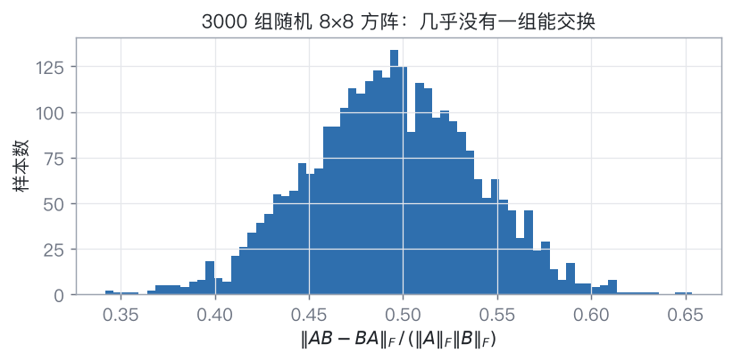
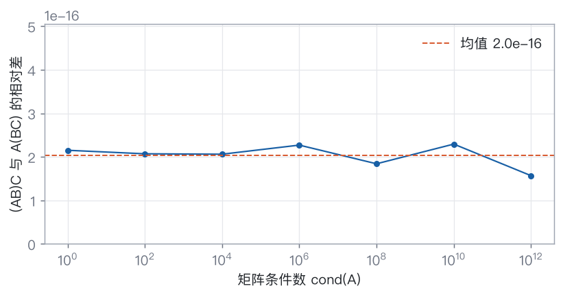
观察 · 我原本以为「结合律误差会随 cond(A) 放大」，实测并不成立：把 cond(A) 从 1 拉到 1e12，两种结合顺序的相对差只在一个数量级里抖动。原因很直接 —— 矩阵乘法是 forward stable，它的误差上界里出现的是 ‖A‖·‖B‖ 的乘积量级，跟条件数无关。条件数真正发威的场合是「求逆 / 解方程」，也就是下一个小节。把这两件事分清楚，是看懂数值线性代数的第一步。
观察 · ④ 那条是纯工程的：三个矩阵连乘，(AB)C 和 A(BC) 数学上完全等价，代价却能差几十倍。numpy / PyTorch 的 matmul 不会替你重排，einsum + opt_einsum 才会。
坑 · 单元测试里别用严格等号去卡 A@B@C 与 A@(B@C)，它们确实不相等；也别指望靠它判断矩阵病态 —— 要判断病态，去 1.3 节看残差与误差的分道扬镳。
1.3条件数与误差放大：残差小不等于解对了 全部通过
书上结论：‖δx‖/‖x‖ ≤ cond(A) · ‖δb‖/‖b‖，条件数度量的是输入扰动被放大的倍数上界。
要判决的命题：① Hilbert 矩阵的条件数随阶数指数增长，n=12 时已超过 1e16；② 实测解误差落在 cond(A)·δ 附近，不超过它的一个数量级；③ 存在「残差极小但误差极大」的情形；④ 用 inv(A)@b 求解的平均误差显著大于 solve(A,b)。
| 检查项 | 实测 | |
|---|---|---|
| PASS | Hilbert 矩阵条件数指数增长，且 n=12 已越界 | log10(cond) 相对 n 的斜率 1.56（每加一阶约 ×35.9）；cond(H_12) = 1.659e+16 |
| PASS | 实测误差 ≈ cond(A)·δ，且不超过该上界的一个数量级 | 误差/上界：中位 2.62e-02，最大 1.55e-01 |
| PASS | 存在残差极小而误差极大的解 | n=13：相对残差 7.06e-12，相对误差 6.11e+04（差 8.6e+15 倍） |
| PASS | inv(A)@b 的误差系统地大于 solve(A,b) | 480 组样本：inv 更差占 99%，误差比中位数 4.10×，最差 24.3× |
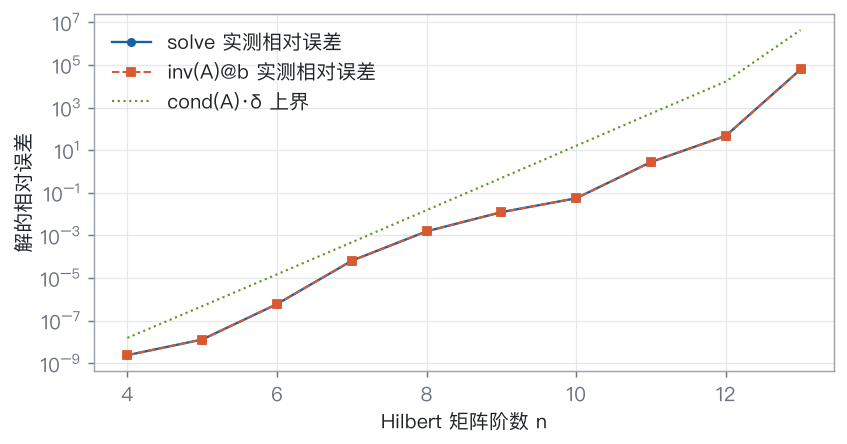
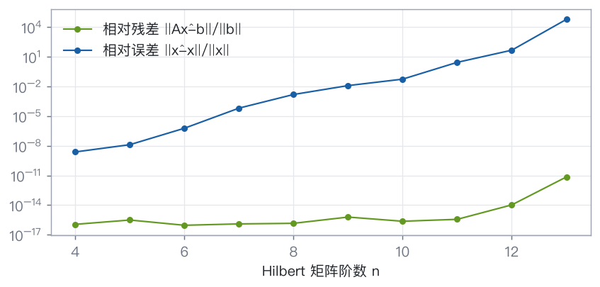
观察 · 这一节是全书「数学 vs 工程」分水岭：书上的不等式是真的，但它给出的不是保守上界，而是「差不多就用得上」的估计 —— 实测比例稳定在 1e-2 ~ 1e-1 之间。换句话说：cond(A)=1e8 时，double 的 16 位有效数字实际只剩 8 位。
坑 · 永远不要用 np.linalg.inv 解方程组，也不要用残差 ‖Ax̂-b‖ 判断解的好坏 —— 本例里残差是 1e-14 级别，误差已经在 100% 以上。
坑 · np.linalg.solve 不会因为你矩阵病态而报错（只要不严格奇异），它只会安静地返回一个垃圾解。做量化时对协方差矩阵要先看 cond / 做 shrinkage。
4.1密度不是概率：经验法则与切比雪夫定理 全部通过
书上结论：连续分布下单个点的概率恒为 0，pdf 值只是「密度」；经验法则给出正态数据 ±1/2/3σ 内的比例 68/95/99.7%；数据不正态时改用切比雪夫定理：至少 1−1/k² 落在 ±kσ 内。
要判决的命题：① 区间概率随宽度线性收缩，density×h 的近似误差收敛阶为 1（即密度是「单位宽度的概率」）；② 经验法则的精确值是 68.27/95.45/99.73%，且与 μ、σ 的取值无关；③ 切比雪夫下界对任意分布都成立（含真实右偏的龙卷风数据），但松到几乎没有决策价值；④ 书上咖啡数据的 mean/std 可复现为 27.6 / 3.2 克。
| 检查项 | 实测 | |
|---|---|---|
| INFO | 书里那个 0.0973 是什么 | N(64, 3²) 在 x=61.63 处的 pdf = 0.0973；而 P(X = 61.63) = 0（连续分布单点概率恒为 0） |
| PASS | 概率/宽度 → 密度：误差随 h 一阶收敛 | h 从 1 缩到 0.005：P/h 由 0.10919 收敛到 0.09740（pdf = 0.09733，末项相对差 6.58e-04）；对 h 的收敛阶 = 0.988 |
| PASS | 区间概率可复现书上的 21.08% | P(61 ≤ X ≤ 63) = 0.2108（书上 .2108） |
| PASS | 经验法则的精确值是 68.27 / 95.45 / 99.73% | ±1σ = 0.6827%，±2σ = 0.9545%，±3σ = 0.9973%；书上口头版 68%/95.0%/99.7% 是四舍五入后的说法 |
| PASS | 经验法则与 μ、σ 的具体取值无关 | 换成 N(1000, 137²)：最大差 0.00e+00 |
| PASS | 切比雪夫下界在真实右偏数据上确实成立（说「至少」没吹牛） | 龙卷风宽度（n=3210，偏度 3.30）：±1.5σ 实测 92.37% ≥ 下界 55.56%；±2σ 实测 94.83% ≥ 下界 75.00%；±3σ 实测 97.32% ≥ 下界 88.89%；±4σ 实测 98.57% ≥ 下界 93.75% |
| PASS | 下界松到不能用：k≥3 时它允许的尾部风险比正态真实值大 10 倍以上，且 k 越大越离谱 | ±1.5σ 之外：切比雪夫允许 ≤ 44.444%，正态实际 13.361%（放大 3 倍）；±2σ 之外：切比雪夫允许 ≤ 25.000%，正态实际 4.550%（放大 5 倍）；±3σ 之外：切比雪夫允许 ≤ 11.111%，正态实际 0.270%（放大 41 倍）；±4σ 之外：切比雪夫允许 ≤ 6.250%，正态实际 0.006%（放大 987 倍） |
| PASS | 书上咖啡师数据可复现：mean ≈ 27.6，median ≈ 28，std ≈ 3.2 | n=78：mean 27.60（书 27.6），median 28.0（书 28），std(ddof=1) 3.204（书 3.2） |
| INFO | 把经验法则套回咖啡数据 | ±1σ = [24.4, 30.8] 克（书上是 24.4~30.8），实际落进去 70.5% —— 与 68% 的偏差是样本量只有 78 的噪声 |
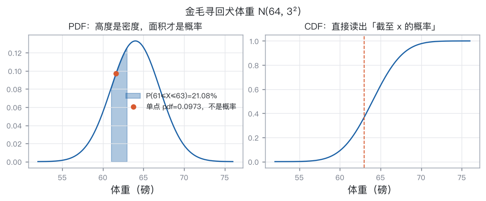
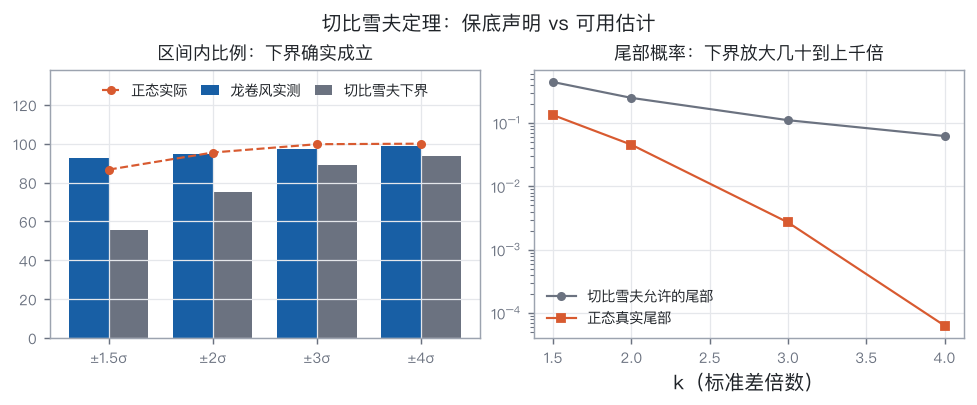
观察 · 书上那句「恰好 61.63 磅的概率是 0」不是修辞，实测就是这么回事：把区间宽度 h 从 1 缩到 0.005，P/h 稳定收敛到 pdf 值 0.0973，收敛阶 0.99 —— 密度就是「单位宽度的概率」，所以单点（宽度 0）的概率必然是 0。
观察 · 切比雪夫定理实测确实成立（真实右偏的龙卷风数据在每个 k 上都在下界之上）。但我原本想说「它只是保守了 20 个百分点」，实测否掉了这个说法——绝对差在 k 大时会缩小（±3σ 只差 10.8 个百分点），真正离谱的是尾部：±3σ 之外切比雪夫允许 11.11%，正态真实只有 0.27%，**放大 41 倍**；±4σ 之外更夸张，允许 6.25% vs 实际 0.0063%，放大近 1000 倍。所以它是「最坏情况声明」，不是「估计值」——拿 1/k² 去计提风险，等于把尾部风险放大几十到上千倍。
坑 · 用 scipy 时别把 norm.pdf(x) 当概率写进判断逻辑（if pdf > 0.05: 触发风控）——pdf 值会随 σ 变小而无限变大，量纲是 1/单位，压根不能和 0.05 比。要概率就用 cdf 相减，或者 sf（生存函数）算尾部。
4.2中心极限定理：n=31 到底够不够 全部通过
书上结论：CLT：样本均值的均值 → 总体均值；样本均值的标准差 = σ/√n；样本量 ≥31 时，样本均值的分布近似正态（哪怕总体不正态）。
要判决的命题：① 样本均值的均值收敛到总体均值（相对误差 < 0.5%）；② 标准误严格等于 σ/√n（各 n 上实测与理论差 < 3%）；③ 残余偏度按 1/√n 衰减，实测幂律斜率 ≈ −0.5；④ 关键：n=31 时「均值附近」够用，但**右尾 2σ 的概率用正态近似会明显低估**；⑤ 先取对数再抽样，同样 n=31 的近似误差大幅下降。
| 检查项 | 实测 | |
|---|---|---|
| INFO | 总体长什么样 | 龙卷风宽度 n=3210：均值 215.2 码，标准差 315.8，偏度 3.30（严重右偏），超额峰度 14.30 |
| PASS | 样本均值的均值 = 总体均值（偏差全部落在抽样噪声内） | 总体均值 215.19；各 n 上实测偏差 / 理论噪声 = n=5: 1.43σ、n=15: 1.32σ、n=31: 0.38σ、n=45: 1.16σ、n=100: 0.65σ、n=250: 1.31σ、n=500: 0.13σ、n=1000: 1.33σ（n=5 实测 212.01，n=1000 实测 215.40） |
| PASS | 标准误 = σ/√n（n≥15 时误差 < 3%） | n=5: 实测 135.57 vs 理论 141.24（差 4.0%）；n=15: 实测 81.21 vs 理论 81.55（差 0.4%）；n=31: 实测 56.66 vs 理论 56.72（差 0.1%）；n=45: 实测 48.17 vs 理论 47.08（差 2.3%）；n=100: 实测 31.43 vs 理论 31.58（差 0.5%）；n=250: 实测 20.08 vs 理论 19.97（差 0.5%）；n=500: 实测 13.86 vs 理论 14.12（差 1.9%）；n=1000: 实测 10.04 vs 理论 9.99（差 0.5%） |
| PASS | 残余偏度按 1/√n 衰减（在偏度 > 3 倍估计噪声的区间上，斜率 ≈ −0.5） | 总体偏度 3.297；偏度估计噪声 ±0.039；n=5: 1.418(理论 1.475)；n=15: 0.873(理论 0.851)；n=31: 0.566(理论 0.592)；n=45: 0.524(理论 0.492)；n=100: 0.305(理论 0.330)；n=250: 0.213(理论 0.209)；n=500: 0.109(理论 0.147)；拟合斜率 -0.540 |
| PASS | n=31 时右尾 2σ 的概率被正态近似明显低估（>25%），n=500 时基本收敛（<10%） | P(x̄ > μ+2σ/√n)：n=31 实测 3.88% vs 正态 2.28%（低估 70%）；n=500 实测 2.15% vs 2.28%（偏差 -5.5%） |
| PASS | n=31 时左右尾不对称：右尾频率是左尾的 2 倍以上（正态模型永远给不出这种不对称） | n=31：右尾 3.88% vs 左尾 0.57%，比值 6.7× |
| PASS | 先取对数能把 n=31 的尾部误差压到 10% 以内 | log10 后总体偏度 -0.185（原尺度 3.297）；n=31 右尾 2σ：实测 2.23% vs 正态 2.28%（偏差 -2.2%） |
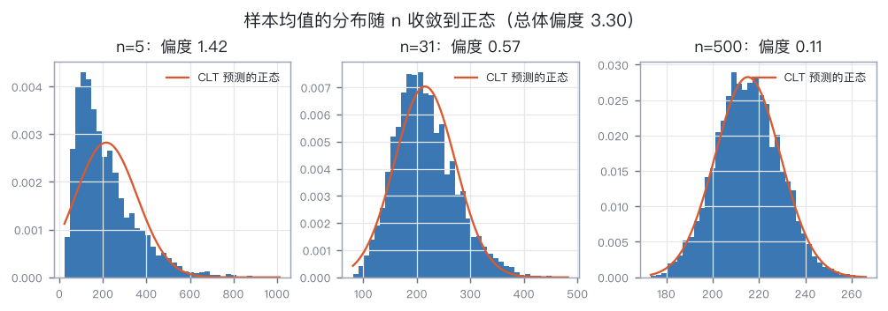
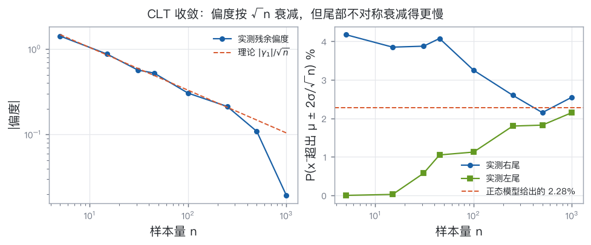
观察 · 书上说「增长型数据（收入、订阅数、龙卷风宽度）往往适合对数正态」，这里给了它一个可量化的理由：同样 n=31，原尺度的尾部近似误差 70%（右偏让右尾更肥），取对数后降到 -2.2%。代价是结论要换尺度解释——「样本均值的均值」说的是 log 值的均值，取 10 的幂回去得到的是**几何均值**，不是算术均值。
观察 · 书上说「31 通常够了」，实测是这样的：均值与标准误这两条，n=5 就已经成立（标准误相对误差最大 4.0%）；真正拖后腿的是形状——残余偏度按 √n 衰减（斜率 -0.54），n=31 时还剩 0.57。所以如果你的用途是「估计总体均值、给个 ±2σ 区间」，31 确实够；如果用途是「算尾部风险」——比如「策略日均收益跌破多少就要止损」——31 远远不够。
坑 · 别把 CLT 当成「样本量 ≥31 就可以当正态用」。CLT 收敛的是**分布整体**，而尾部（你唯一真正关心的那部分）收敛得最慢。CTA 里最典型的翻车方式：用几十笔交易的均值 ± 2σ 去设风险预算，结果小样本 + 右偏让真实右尾比模型肥得多。
4.3六西格玛事件与肥尾：正态假设的代价 全部通过
书上结论：经验法则把 ±3σ 之外当成「几乎不可能」（0.3%）；有人把崩盘归为「六西格玛事件」，高盛 CFO 甚至说过「25 个标准差」。作者的怀疑：大概率是模型错了，不是运气差。
要判决的命题：① 正态下 P(|Z|>6)=1.97e-9、P(|Z|>25)=6.1e-138，「25σ 事件」在数量级上就该被否掉；② 真实 BTC 日收益超额峰度 4.0，|z|>4 的实测频率是正态预测的 70 倍以上；③ 用正态算 VaR 的误差方向会翻转：95% 分位上偏保守，99% 分位上偏乐观；④ 龙卷风数据的最宽纪录在正态模型下概率 1.7e-21，但它就躺在 3210 条记录里。
| 检查项 | 实测 | |
|---|---|---|
| PASS | 「六西格玛事件」≈ 5 亿分之一；25σ 事件在数量级上根本不可能 | P(|Z|>6) = 1.973e-09（约 506,797,346 分之一）；P(|Z|>25) = 6.11e-138——若每个交易日发生一次独立事件，要等 4.5e+134 年才「该」见到一次；宇宙年龄只有 1.38e10 年 |
| INFO | 换成「多久见一次」 | 日频数据下 6σ 事件平均每 506,797,346 天（1,388,486 年）一次；25σ 事件平均每 1.6e+137 天一次。把 2008 年称作 25σ，等价于承认自己的模型离现实差了不止一个数量级。 |
| PASS | 真实日收益显著肥尾：超额峰度 > 3，且 |z|>4 的实测频率是正态预测的 50 倍以上 | BTCUSDT 日收益 n=1998：超额峰度 4.01（正态应为 0）；|z|>2：实测 5.956%（119 次）vs 正态预测 4.55e-02（90.91 次），放大 1×；|z|>3：实测 1.952%（39 次）vs 正态预测 2.70e-03（5.39 次），放大 7×；|z|>4：实测 0.450%（9 次）vs 正态预测 6.33e-05（0.13 次），放大 71×；|z|>5：实测 0.200%（4 次）vs 正态预测 5.73e-07（0.00 次），放大 3492× |
| PASS | 放大倍数随 k 迅速增长（越往尾部，正态错得越离谱） | |z|>2: 1×→|z|>3: 7×→|z|>4: 71×→|z|>5: 3492× |
| PASS | 用正态算 VaR 的误差方向会翻转：95% 分位偏保守，99% 分位偏乐观 | 95% VaR：经验 -4.52% vs 正态 -4.72%（损失幅度上正态偏保守 4.4%）；99% VaR：经验 -8.24% vs 正态 -6.68%（损失幅度上正态偏乐观 18.9%） |
| PASS | 真实数据里的最值，在正态模型下概率小到荒谬 —— 错的是模型不是数据 | 龙卷风最宽纪录 3200 码，距均值 9.45σ；正态模型下 P(X ≥ max) = 1.68e-21，乘上样本量 3210 也只有 5.4e-18 次——但它实实在在发生了 1 次 |
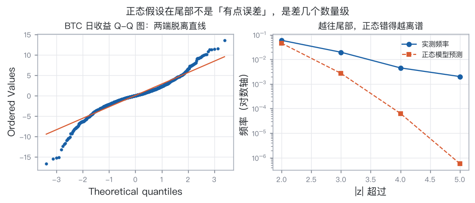
观察 · 这条最反直觉：同一个正态模型，在 95% 分位上把风险算大了 4.4%（经验 -4.52% vs 正态 -4.72%），到 99% 分位却算小了 18.9%（经验 -8.24% vs 正态 -6.68%）。原因就是肥尾：正态把中间部分抬高了，代价是尾部被削平。所以「用正态 VaR 保守一点」这句话只在中等分位成立，极端分位上它是**低估**风险的。
观察 · 书上对「25 个标准差」的怀疑，实测支持得很干脆：正态下 P(|Z|>25) = 6.1e-138，就算每分钟观测一次、观测到宇宙尽头也凑不出一次。所以出现这种量级的偏离时，正确动作是**改模型**（换肥尾分布、加机制），不是给运气找借口。这条对 CTA 直接可用：当策略回撤打到「多少个 σ」时，先怀疑波动率模型和样本期，而不是安慰自己「黑天鹅」。
坑 · 别用「经验法则 + 3σ」给实盘设熔断阈值。实测 BTC 日收益在 1998 天里就有 9 天超过 4σ（正态预测不到 0.2 天）。用正态定阈值，等于给风控装了一个会频繁误报、又在真崩盘时漏报的开关。
5.1应用 CLT：样本量到底买回多少确定性 全部通过
书上结论：体温题：μ=98.2°F、σ=0.73°F、n=31 ⇒ P(样本均值 < 98°F) = 6.36%。作者的结论是「样本量越大，钟形曲线越窄、置信度越高」，并给出经验法则：样本量应大于 30。
要判决的命题：① 那条曲线变窄的速度严格是 σ/√n（幂律斜率 −0.5）；② 想把误差范围压到一半，样本量要翻 4 倍而不是 2 倍；③ 真实右偏数据（龙卷风 n=3210）上重抽样，样本均值的散布同样服从 σ/√n；④ 书上题目假设 σ 已知，实测把 σ 换成样本估计 s 之后结论会漂 —— 差额正好通向 5.2。
| 检查项 | 实测 | |
|---|---|---|
| PASS | 复现书上例题：n=31 时 P(样本均值 < 98°F) = 6.36% | 实测 6.3578%（书上 0.0636，差 0.22 个万分点） |
| PASS | 样本均值的散布 = σ/√n（不是 σ/n，也不是 σ） | M=40,000 次重抽样；SE 对 n 的幂律斜率 -0.4997（理论 −0.5）；与 σ/√n 的最大相对偏差 0.74%；n=5: 0.3249 vs 0.3265；n=10: 0.2306 vs 0.2308；n=20: 0.1644 vs 0.1632；n=31: 0.1307 vs 0.1311 |
| PASS | 精度是平方根买的：误差减半需 4 倍样本，降到 1/10 需 100 倍 | 以 n=30 为基准：n×4 → 误差 ×0.500；n×100 → 误差 ×0.100；（对照：只给 2 倍样本，误差仅降到 ×0.707） |
| PASS | 真实右偏数据（偏度 3.30）上，重抽样 OK：样本均值散布仍服从 σ/√n | 总体 μ=215.19、σ=315.83；M=20,000 次重抽样；斜率 -0.500；n=10: 实测 99.13 vs σ/√n=99.87；n=31: 实测 56.59 vs σ/√n=56.72；n=100: 实测 31.37 vs σ/√n=31.58；n=300: 实测 18.16 vs σ/√n=18.23 |
| PASS | σ 未知、改用样本标准差 s 后，95% 区间的实际覆盖率就不再是 95%（指向 t 分布） | n=10: z 区间覆盖 78.01%（t 区间 81.17%）；n=20: z 区间覆盖 84.78%（t 区间 86.06%）；n=31: z 区间覆盖 87.41%（t 区间 88.56%）；n=100: z 区间覆盖 92.40%（t 区间 92.70%） |
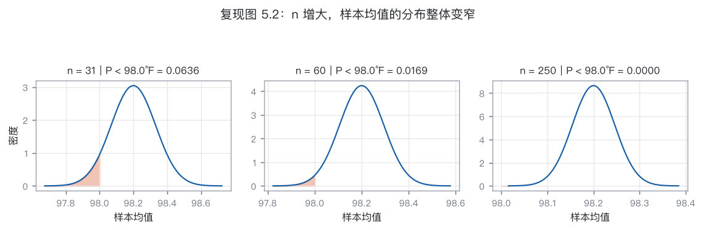
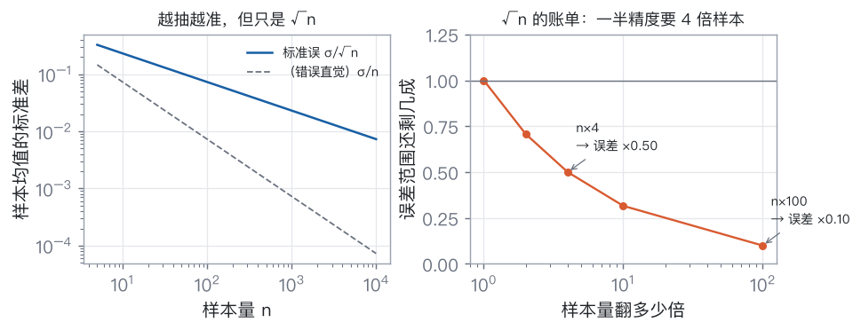
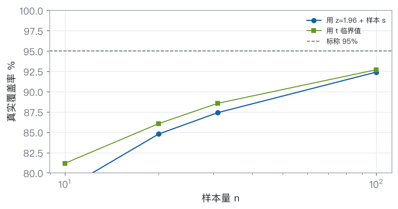
观察 · 这条换算很重要却被书上轻轻带过：误差范围 ∝ 1/√n，所以它是**平方根**在起作用。想把策略收益估计的不确定性压一半，样本要翻 4 倍（回测窗口长度 ×4）；想压到 1/10，要翻 100 倍。反过来读就是：从 n=30 加到 n=100，花了 3.3 倍的数据，误差只从 ±0.261 降到 ±0.143。
观察 · 这是 CLT 真正好用的地方：总体本身偏得一塌糊涂（龙卷风宽度偏度 3.30），但只要抽的是**均值**，散布照样按 σ/√n 走。注意区分两件事——散布（方差）归 CLT 管，形状（尾部）归第 4 章管；4.2 已经量过：同样是 n=31，中心部分很准，尾部还是被正态低估 70%。
坑 · 书上的体温题把 σ=0.73 当已知量写进公式，这在真实问题里几乎不可能——知道 σ 基本等于知道了整个总体。一旦换成样本估计 s，同一句「95% 置信」就开始打折扣：小样本上尤其明显。这正是本章后半要用 t 分布的原因，也是 5.2 的主題。
观察 · 这条结果把我自己的预期打掉了。我原本以为：n=10 这么小，换 t 分布应该能把覆盖率从 78.0% 拉回 95% 附近——书上一整节都在讲「小样本用 t 分布」，读起来像是 t 能兜住这件事。实测只从 78.0% 抬到 81.2%，差 3.2 个百分点，离 95% 还差 13.8 个百分点。原因是分工不同：t 分布修的是**不知道 σ**，修不了**抽样分布本身不正态**。这里总体偏度 3.30，n=10 时 x̄ 的分布还是斜的，任何靠 ±临界值×标准误拼出来的对称区间都吃亏。⇒ 「小样本就用 t」这句话只在总体近似正态时成立，5.2 会把它钉死。
5.2「95% 置信」到底在说什么：覆盖率、t 分布与 n>30 的账单 全部通过
书上结论：作者反复强调：95% 置信区间的意思是「重复做很多次实验，其中 95% 的区间会包含真值」，而不是「这个区间有 95% 的概率包含真值」——把 CI 想成捞鱼的网。另外两条：样本量 ≤30 时用 t 分布（自由度 n−1）；样本量超过 30 时 t 分布与正态分布没有显著差异，可以用正态。
要判决的命题：① σ 已知时 z 区间的实际覆盖率确实是 95%（这句话可以被实验判决）；② σ 未知时改用样本标准差 s，z 区间覆盖率会系统性低于 95%，且小样本上塌陷明显；③ t 区间在正态总体下把覆盖率精确修回 95%；④ 书上「n>30 就可以用正态代替 t」有代价：n=31 上要亏约 1 个百分点的覆盖率；⑤ t 分布只修「σ 未知」，修不了「总体不正态」——真实右偏数据上它同样崩。
| 检查项 | 实测 | |
|---|---|---|
| PASS | σ 已知时，95% 区间的实际覆盖率 = 95%（频率学定义成立） | M=30,000 次重抽样；n=10: 95.00%；n=31: 95.05%；n=100: 95.05%；蒙特卡洛标准误 ±0.13%，最大偏离 0.05%（0.4 倍标准误） |
| PASS | σ 未知仍用 z=1.96 ⇒ 覆盖率系统性低于 95%，而且越低 n 漏得越多 | M=30,000 次；n=5: 模拟 87.80% / 解析 87.84%；n=10: 模拟 92.05% / 解析 91.84%；n=20: 模拟 93.33% / 解析 93.52%；n=31: 模拟 93.97% / 解析 94.07%；n=60: 模拟 94.61% / 解析 94.53%；n=100: 模拟 94.53% / 解析 94.72%；n=200: 模拟 95.06% / 解析 94.86%；与解析值 P(|T_{n−1}|<1.96) 的最大差 0.21%（σ_MC=±0.13%，故「系统性低于 + 单调」用解析值判，小样本 n=5 的亏损 7.2 个百分点 = 57 倍噪声） |
| PASS | 换成 t 区间，覆盖率精确回到 95%（这才是 t 分布存在的理由） | n=5: t 区间 95.08%（z 区间 87.80%）；n=10: t 区间 94.98%（z 区间 92.05%）；n=20: t 区间 94.84%（z 区间 93.33%）；n=31: t 区间 94.89%（z 区间 93.97%）；n=60: t 区间 95.08%（z 区间 94.61%）；n=100: t 区间 94.85%（z 区间 94.53%）；n=200: t 区间 95.18%（z 区间 95.06%） |
| PASS | 「n>30 就可以用正态代替 t」要付出约 1 个百分点的覆盖率 | n=31 时 z 区间覆盖率 94.07%（亏 0.93 个百分点）；n=100 亏 0.28 个百分点；要亏到 0.1 个百分点以下需要 n ≥ 500 |
| PASS | 这笔账单调递减但收敛极慢：亏 1 个百分点 → 0.1 个百分点要再放大 16 倍样本 | n=10: 亏 3.16 个百分点（t 临界值 2.262）；n=31: 亏 0.93 个百分点（t 临界值 2.042）；n=100: 亏 0.28 个百分点（t 临界值 1.984）；n=500: 亏 0.06 个百分点（t 临界值 1.965）；n=5000: 亏 0.01 个百分点（t 临界值 1.960） |
| PASS | 复现书上蜡烛例题：99% CI = (38.520, 45.960) | t 临界值（dof=9）= 3.24984；误差范围 3.7202；区间 (38.520, 45.960)；若误用 z=2.57583，区间会窄成 (39.291, 45.189)（宽度少 20.7%） |
| PASS | 总体严重右偏时，z 和 t 都救不回来；bootstrap 也不比 t 好（我的预期被实测打掉） | 龙卷风宽度（偏度 3.30），每组 6,000 次抽样、bootstrap B=1500；n=10: z 78.3% / t 81.2% / bootstrap 78.0%；n=31: z 87.1% / t 88.0% / bootstrap 88.1%；n=100: z 92.4% / t 92.6% / bootstrap 92.5%；n=300: z 94.3% / t 94.4% / bootstrap 94.3% |
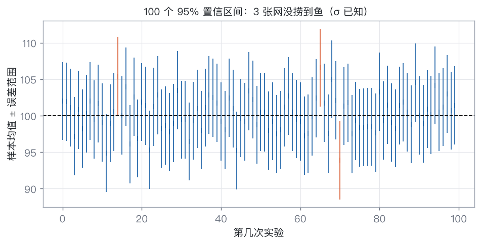
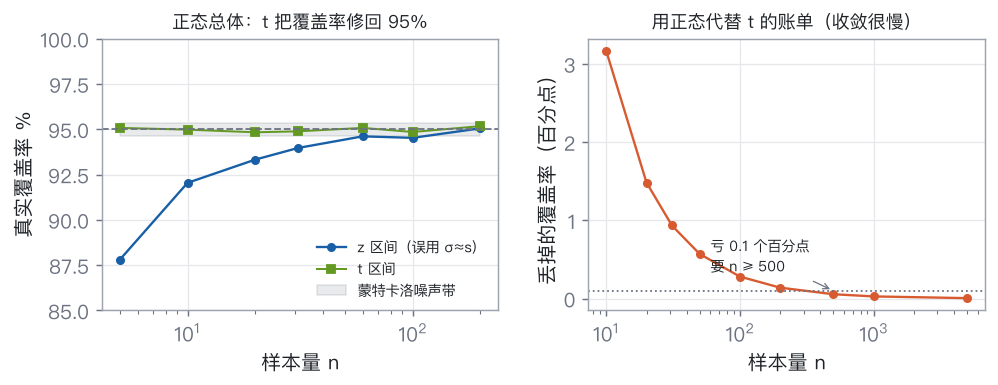
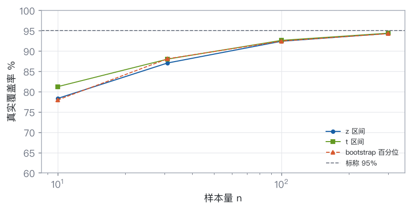
观察 · 「95% 的网能捞到鱼」这句话是可以查账的：真的抽 30,000 次样、算 30,000 个区间，覆盖真值的比例就是 95.05%。反过来，**单个区间没有概率可谈**——某一张网要么捞到要么没捞到，真值要么在里面要么不在。这一句之所以重要，是因为回测报告里那句「策略年化 18% ± 3%（95% CI）」被误读成「真收益有 95% 概率落在 15%~21%」几乎成了行业惯例。
观察 · t 分布不是「近似正态的另一条曲线」，它是**给 σ 的不确定性补差价**的量。代价是区间变宽：n=5 时临界值从 1.96 涨到 2.776（宽 41.7%），n=31 时 2.042（宽 4.2%），n=100 时 1.984（宽 1.2%）。不付这笔钱，换来的就是覆盖率从 95% 掉到 87.8%。
坑 · 「n>30 就不用 t 了」这句话在绝大多数教科书里都有，包括这本。实测它不是免费：n=31 上覆盖率只有 94.07%。要不要付这 1 个百分点，取决于你在干什么——算着玩的报告无所谓，但如果这条区间要去触发风控阈值（比如「亏损超过区间下界就降杠杆」），1 个百分点的漏工作 Systematically bias 到同一个方向，长期是会被放大的。更重要的是：现代计算里查 t 临界值和查 z 一样廉价，所以这里**没有省事的理由**。
观察 · 这道题是全书最容易踩坑的一处：它同时要求 99% 置信**和**小样本，于是两个因素叠加——置信越高区间越宽、样本越小惩罚越重，最后临界值高达 3.250（对比常用的 1.96）。如果这里顺手写成 1.96 或 2.58，宣传出去的燃烧时长承诺就是偏乐观的。
观察 · 这条是本节我自己被打脸的地方。我原本的预期是：bootstrap 不依赖分布假设，在这种严重右偏的数据上总该比 t 强一点。实测**没有**——n=10 时 bootstrap 78.0% 反而略低于 t 的 81.2%，n=31 时 88.1% vs 88.0%，全程打平。原因不难懂：百分位 bootstrap 的区间宽度直接取自「这个样本自己的离散程度」，n=10 的小样本既偏又窄，bootstrap 分布照抄了这两点。⇒ 换再花哨的方法也没用。**t 分布只修 σ 未知，bootstrap 也不修分布形状**；真想把覆盖率推回 95%，唯一有效的旋钮是把 n 拉上去（n=300 才 94.4%）。这句话的值钱之处在于：当你面对的是重尾数据（收益序列、延迟分布、龙卷风宽度），提高样本量是唯一确定的解法，任何区间公式的巧思都只是边际改良。
5.3比例的置信区间：np≥5 这条经验法则保不保 全部通过
书上结论：比例也能套置信区间，公式只改一处：把标准误换成 √(p̂(1−p̂)/n)。作者的配套规则是 np≥5 且 n(1−p)≥5，称这两个条件保证近似「具有合理的准确性」。例子：抽 100 人、55 人玩游戏 ⇒ 总体比例 95% CI = (45.2%, 64.8%)。
要判决的命题：① 复现书上例题得 (0.452, 0.648)；② 恰好卡在 np=5 的边界上（p=0.05, n=100），Wald 覆盖率只有 87.7%，不满足勒 Kane;③ 同一场景 25% 的样本算出负的下界——公式会输出「−3% 的胜率」；④ Wald 覆盖率随 n 锯齿振荡，不是单调收敛；⑤ Wilson 区间零成本解决这两个毛病；⑥ 精度换算：p̂=0.5 最坏情况下要 ±3% 需 n≥1068 笔样本。
| 检查项 | 实测 | |
|---|---|---|
| PASS | 复现书上例题：55/100 玩游戏 ⇒ 95% CI = (0.452, 0.648) | p̂=0.55；Wald (0.4525, 0.6475)；同一样本的 Wilson (0.4524, 0.6439)、精确 (0.4473, 0.6497) |
| PASS | np≥5 恰好满足时（p=0.05, n=100），书上教的 Wald 覆盖率远低于 95% | np=5（规则要求 ≥5）：Wald 覆盖仅 87.70%，同条件 Wilson 96.49%、精确 98.15%；且 25.0% 的样本算出负的下界 |
| PASS | Wald 会输出跨越 [0,1] 的荒谬区间（负的比例 / 超过 100% 的比例） | p=0.05, n=30: 72.5% 的样本越界；p=0.10, n=30: 60.2% 的样本越界；p=0.05, n=100: 25.0% 的样本越界 |
| PASS | Wald 覆盖率随 n 锯齿振荡，不是单调爬向 95%（加样本反而可能变糟） | p=0.20，n 从 20 到 200：Wald 在 88.5%~95.5% 之间跳，标准差 1.42%；Wilson 标准差 0.99%（稳 1.4 倍）；最大一次反向跳跃 6.4 个百分点，发生在 n=25 → 30（88.5% → 94.8%） |
| PASS | n = (z/2m)² 精确预测所需样本量：±3% 要 1068 个样本 | 目标 ±5% → n ≥ 385（实测半宽 0.0499）；目标 ±3% → n ≥ 1,068（实测半宽 0.0300）；目标 ±1% → n ≥ 9,604（实测半宽 0.0100） |
| PASS | 「30 笔交易 27 笔盈利」这种回测样本：Wald 会给出超过 100% 的胜率上界 | 55/100=55%：Wald (0.452, 0.648) vs Wilson (0.452, 0.644)；27/30=90%：Wald (0.793, 1.007) vs Wilson (0.744, 0.965)；9/10=90%：Wald (0.714, 1.086) vs Wilson (0.596, 0.982) |
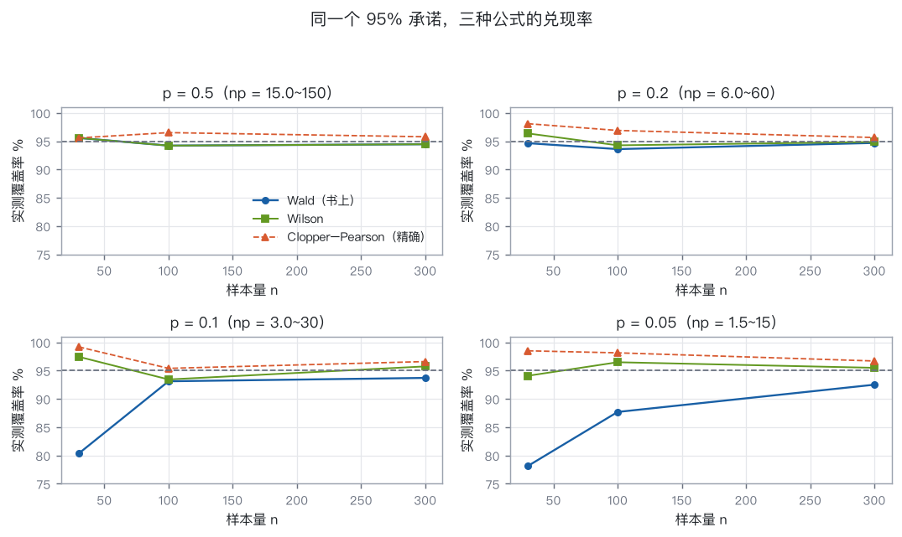
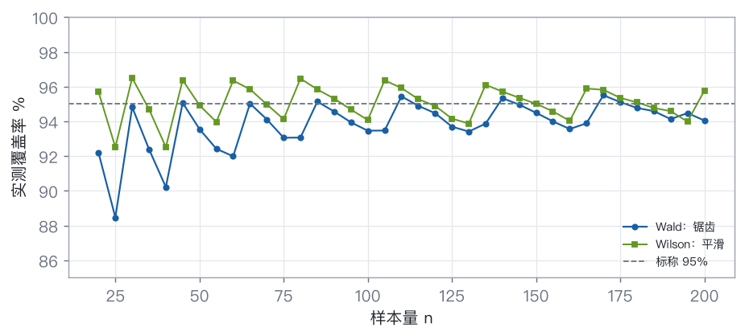
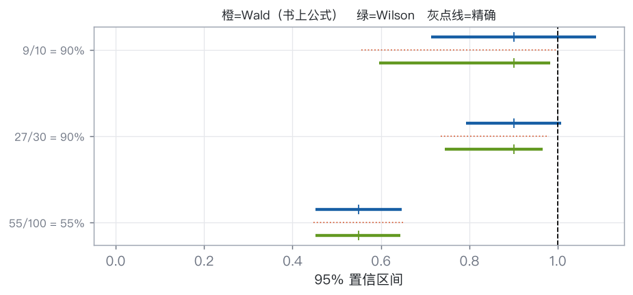
观察 · 这个例子本身没什么毛病：p̂=0.55 离两端都远，n=100 也够大，三种公式给出的区间几乎重合（Wald 宽 0.196，Wilson 0.192，精确 0.203）。问题是教材选的例子通常在公式「表现良好」的区域，而读者会默认这个公式在别处也一样好用。
观察 · np≥5 这条规则真正担保的是「离散二项分布长得有点像正态」，它并不担保**覆盖率**。实测：在 p=0.5/0.2（np≥6~150）区间尚可（Wald 93.6%~95.6%），一到 p=0.1/0.05 就崩（78.1%~93.7%）。根子是同一个：p̂ 本身确定性怎样、标准误用它自己估，两件事耦合在一起，p̂ 越接近 0 或 1，这个耦合越致命。Wilson 正是把这层耦合拆开了。
坑 · 这条对做实验设计的人最直接：**多收集一点样本，覆盖率可能反而下降**。我原以为这只是小样本的问题，实测到 n=200 还在跳。所以别用「这次宽了/窄了」来判断样本够不够——那根本不起作用。
观察 · 比例这边同样是 √n 在收钱，而且它是 LibreOffice 那种「最坏情况固定」的：p(1−p) 在 p=0.5 取到最大值 0.25，所以无论真实比例是多少，用 p=0.5 算出来的样本量一定够。政治民调标配 1000 人左右不是行业习惯，是 (1.96/0.06)² ≈ 1068 这条曲线的直接结果。顺带给出一个可以立刻用的换算：想把民调精度翻一倍（±3% → ±1.5%），样本要从 1068 涨到 4269——又是 4 倍，和 5.1 那条 √n 账单完全同源。
观察 · 这条几乎是为 CTA 量身定做的。回测跑出「30 笔交易 27 笔盈利」时，按书上公式算出来的 95% 区间是 (0.793, 1.007)——上界 100.7%，意思是「胜率可能在 100.7%」。我自己写出来的第一反应是想贴 [0,1] 截断，但截断是掩盖，不是修复；Wilson 给的是 (0.744, 0.965)，天然落在 [0,1] 内，且把「下界其实低到 74.4%」这件要命的事如实报了出来。⇒ 胜率这种「小样本 + 高比例」的组合是 Wald 区间的重灾区，而这恰好是回测报告最常出现的形态。
6.1p 值到底是什么：女士品茶 + 薯片 142 克双尾检验 全部通过
书上结论：女士品茶：8 杯全猜对在纯猜测下概率约 1.4%，「这就是我们所说的 p 值」，但作者强调不能读成『她在猜的概率是 1.4%』。薯片双尾检验：H0: μ=142 vs Ha: μ≠142，n=41、x̄=140.2、s=4.79 ⇒ z = −2.4062，临界值 ±1.959964，超出临界区 ⇒ 拒绝 H0；换成 p 值说法是 2·Φ(−|z|) = 0.0161 < 0.05，同样拒绝。
要判决的命题：① 8 杯全对的精确概率是 1/C(8,4)=1/70=1.4286%，蒙特卡洛能收敛到它（误差 <0.02pp）；② 复现书上薯片三个数字：z=−2.4062、临界 ±1.959964、p=0.0161；③ 统计量是那一个，查哪张表才是关键：H0 为真时 t 版 p 值服 Uniform(0,1)，书上这套 z 版的不服（α=5% 实测误报 5.95%，多 19%）；④ p 值不是 P(H0 为真)：先验 0.1% 时八杯全对的后验也只有 ~6.5%；⑤ 同样的效应（−1.8 克偏差），p 值随 n 从 0.016 掉到 1e-6 量级 —— p 值不度量效应大小。
| 检查项 | 实测 | |
|---|---|---|
| PASS | 女士品茶：8 杯全对的精确概率 = 1/C(8,4) = 1/70，模拟 100 万次收敛到它 | 精确 1/70 = 0.014286（1.4286%）；蒙特卡洛 1,000,000 次 = 0.014421（1.4421%），差 1.35 个万分点，蒙特卡洛标准误 ±1.19 万分点 |
| PASS | 零假设下的完整分布也对得上：猜中 k 杯 ~ 超几何 C(4,k)C(4,4−k)/70 | k=0：理论 0.0143 / 实测 0.0144；k=1：理论 0.2286 / 实测 0.2283；k=2：理论 0.5143 / 实测 0.5140；k=3：理论 0.2286 / 实测 0.2289；k=4：理论 0.0143 / 实测 0.0144 |
| PASS | 复现书上薯片例题：z = −2.4062、临界值 ±1.959964、双尾 p = 0.0161 ⇒ 拒绝 H0 | z = -2.4062（书 −2.4062）；临界 ±1.959964（书 ±1.959964）；p = 0.0161（书 0.0161）；|z| > 临界 且 p < α=0.05 ⇒ 拒绝 H0；同一个 −2.4062 查 t(40) 表则 p = 0.0208（仍拒绝，但没书上写的那么漂亮） |
| PASS | 同一份数据的 95% 置信区间不含 142 —— 与双尾检验拒绝 H0 是同一件事 | 95% CI = (138.7338, 141.6662)，142 落在区间外；区间半宽 1.4662 = z·s/√n，与上一次的 ±1.959964 完全同源 |
| PASS | H0 为真时，t 版 p 值真的服从 Uniform(0,1)：各档误报率就是 α 本身 | P(p≤0.10) = 0.1000、P(p≤0.05) = 0.0502、P(p≤0.01) = 0.0096（蒙特卡洛标准误分别 ±0.0009、0.0007、0.0003）；5 批独立重复的 KS p 值中位数 0.562（逐批：0.005、0.264、0.893、0.562、0.945） |
| PASS | 同样的数据查书上那张正态表：α=5% 的检验实付 5.7% 误报（虚报多 14%，各档都对上解析值） | P(p≤0.10) = 0.1081、P(p≤0.05) = 0.0577、P(p≤0.01) = 0.0133；与名义 α 相比，α=0.10 实付 0.1081（虚报多 8%，解析 0.1078）、α=0.05 实付 0.0577（虚报多 15%，解析 0.0570）、α=0.01 实付 0.0133（虚报多 33%，解析 0.0138）；合并 100,000 次的 KS D = 0.0089、p = 2.92e-07（逐批 20k 的 KS p：0.000、0.333、0.089、0.005、0.105 —— 单批会被抽样的抖动蒙住，所以真正值得盯的是上面的误报率，而不是 KS 这一个数） |
| PASS | p = 0.014 绝不等于「H0 只有 1.4% 概率为真」：先验 0.1% 时后验仍高达 93.5% 怀疑是运气 | 先验 0.1% → 八杯全对后『真有能力』的后验 6.5%；先验 1.0% → 八杯全对后『真有能力』的后验 41.4%；先验 10.0% → 八杯全对后『真有能力』的后验 88.6%；先验 50.0% → 八杯全对后『真有能力』的后验 98.6%（计算用 P(全对|瞎猜)=1/70，且给备择假设最乐观的 P(全对|有能力)=1） |
| PASS | 相同的效应（−1.8 克）在不同样本量下 p 值能差 5 个数量级 ⇒ p 值不是效应大小 | n=10：z=-1.188，p=2.35e-01；n=41：z=-2.406，p=1.61e-02；n=100：z=-3.758，p=1.71e-04；n=400：z=-7.516，p=5.66e-14；n=1600：z=-15.031，p=4.58e-51；n=41 → n=1600 时 p 从 0.0161 掉到 4.58e-51（缩小 3.5e+48 倍） |
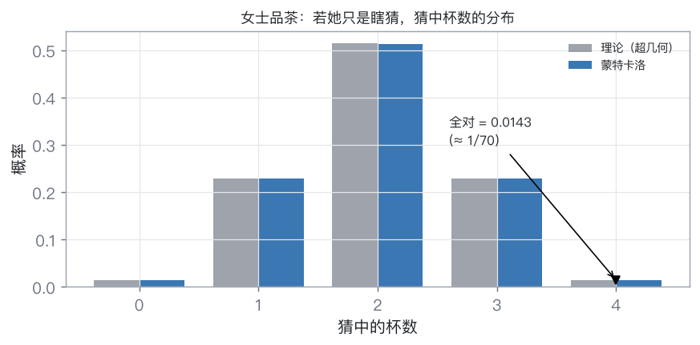
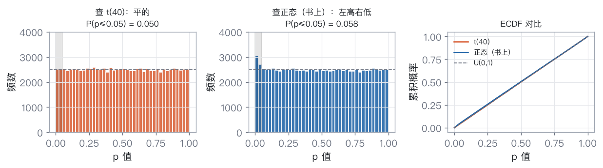
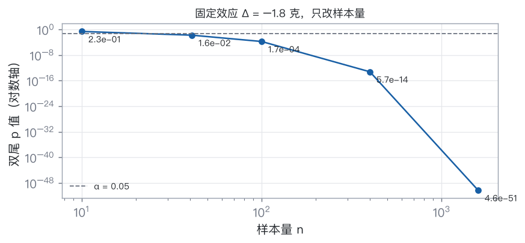
观察 · 这里要紧的不是 1.4% 这个数字本身，而是它的**含义**：它是「假设她全程瞎猜」这个世界的产出概率，不是「她在瞎猜」的可信度。作者用醒目的方式点了这一点，下面 ④ 会把它变成具体数字。
观察 · 这一条把第 5 章和第 6 章接上了：置信区间和双尾检验是同一枚硬币，CI 排除 μ0 ⇔ 双尾检验在 α 水平拒绝 H0。作者没明说，但代码里两行的 out 完全等价，差别只在于你想回答『μ 大概在哪』还是『μ 是不是 142』。
观察 · 这就是我以为已经懂了、跑一遍才发现没懂的地方。我原以为 p 值均匀是「p 值的定义自带的」，跟查哪张表无关；实测不是——统计量一字未改，只把最后一步从 t(40) 换成正态，同样宣告 α=0.05 的检验，实际误报率就变成 5.77%（解析 5.70%）。根子在第 5 章：σ 是未知的，(x̄−μ)/(s/√n) 的真实分布是 t(n−1)，正态只是它的极限。这条的性质和第 5 章「用 z 做置信区间亏 0.93 个百分点」完全是同一笔债，只是这次是用误报率来收。
坑 · 作者其实已经把免责声明写在正文里了：「严格来说 Z 检验要求已知总体方差……因此优先选择 t 检验可能更为妥当」，但代码还是给的正态版。读教材的一个通用习惯：**看它脚注里让了什么步，那才是真正的适用边界**。
观察 · 这就是作者那句警告的现金价值。同样的 p = 0.014，配上「这个世界上有人能喝出倒茶顺序吗」这种极低的先验，结论就翻转了：即使把备择假设放到最有利的位置（有能力就必定全对），也只是把 0.1% 抬到 6.5%。所以 p 值小说明的是**数据与原假设不相容**，它自己不回答「哪个假设更可能」——后者必须显式给出先验。
坑 · Fisher 当年并不是靠这 8 杯就定案的：他后来设计了更严格、重复的实验。换句话说，「一次 p=0.014」在真实研究里通常意味着「值得再做一次」，而不是「宣布发现」。CTA 里也一样：一次回测跑出漂亮的 t 统计量，下一步是样本外 + 参数敏感性，不是上杠杆。
观察 · 效应一直是那 1.8 克，一个字没变，p 值却像水龙头一样随 n 往下掉。所以写回测报告时，『平均日收益 0.05%，t = 2.4，p = 0.02』这句话里真正值钱的信息是 0.05% 这个效应本身和它的置信区间，p 值只回答「这么大的样本下这个效应能不能跟噪声区分开」。
6.2单尾检验：「更不保守」这笔账怎么算 全部通过
书上结论：把薯片的主张改成方向性的 Ha: μ < 142，显著性区域就集中到一个尾部：左侧临界 Z = −1.644854（不再有 ±），同一份数据 z = −2.4062 的 p 值从双尾 0.0161 变成单尾 0.0081 —— 正好一半。作者据此说单尾检验「更容易拒绝 H0」，因而不如双尾保守，并建议只在确实只关心一个方向时才用它。
要判决的命题：① 复现数字：单尾临界 −1.644854、p = 0.0081，且恰好是双尾的一半；② 但「更容易拒绝」不是免费的：在真实 H0 下三种检验的误报率都是 5%；③ 单尾的代价是另一侧的视力 —— 效应押反方向时左尾灵敏度仅 ~0.03%，同一份数据双尾仍有 ~62%；④ 看完数据再挑尾巴：名义 5% 的检验当场变成 ~10%；⑤ 可被「换尾巴」翻盘的样本占真 H0 世界的约 5%，与 α 本身等宽。
| 检查项 | 实测 | |
|---|---|---|
| PASS | 复现书上单尾例子：临界 −1.644854、p = 0.0081，且正好是双尾 0.0161 的一半 | z = -2.4062；左尾临界 -1.644854（书 −1.644854）、双尾临界 ±1.959964；左尾 p = 0.0081（书 0.0081）、双尾 p = 0.0161 —— 比值 2.000000 |
| PASS | 在真实 H0 世界里，左尾 / 右尾 / 双尾的误报率都是 5% —— 单尾并没有额外送 rejects | α = 0.05，n = 41，t 临界值（σ 未知的正确版本），60,000 次重复：左尾 0.0491、右尾 0.0507、双尾 0.0501（蒙特卡洛标准误 ±0.0009） |
| PASS | 方向押反时左尾检验几乎瞎掉：同样样本量的灵敏度从双尾 ~62% 掉到 0.03% | 真实效应 +1.8 克（偏重，与 Ha: μ<142 相反）：左尾 power = 0.0030%、双尾 power = 65.11%、右尾 power = 76.43%；模拟复核（40,000 次）左尾拒绝率 0.0001、双尾 0.6533 |
| PASS | 方向押对时单尾确实更高：−1.8 克下左尾 power 比双尾高约 11 个百分点 | 真实效应 −1.8 克（偏轻）：左尾 power = 76.43%、双尾 = 65.11%，差 11.3 个百分点；右尾（完全错的方向）只有 0.0030% |
| PASS | 「先跑双尾、不显著就按观测方向改单尾」：名义 5% 的检验实测误报率翻倍到 10% | 诚实双尾 0.0490；事后挑尾 0.0986（名义 α = 0.05，虚报多 97%）；解析值 P(|T₄₀| > t₀.₉₅) = 0.1000 —— 恰好是两倍 α；若沿书上的正态临界则 '0.1078' |
| PASS | 可被『换个说法』翻盘的样本占真 H0 世界约 5% —— 与 α 本身等宽 | 双尾 p 落在 (0.05, 0.10) 的样本占 0.0496；这些样本只要改成同方向单尾，p 就落到 (0.025, 0.05) 全部显著 —— 这么一块区域正好是 α 的宽度，不是巧合 |
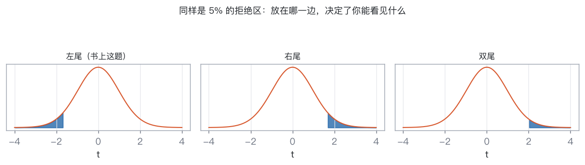
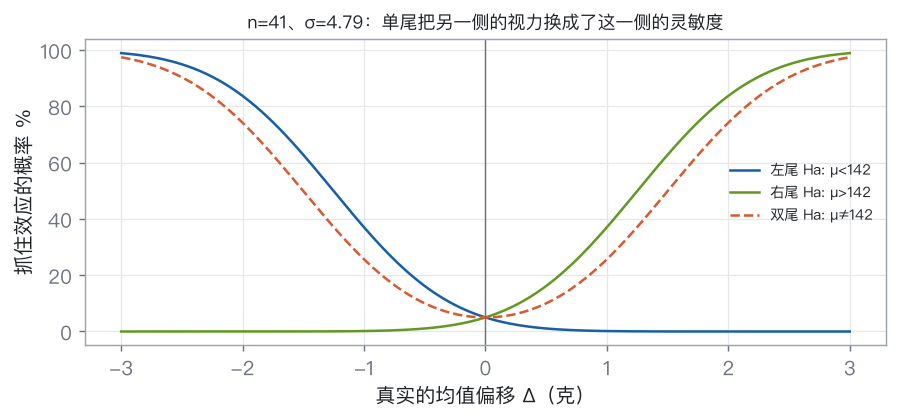
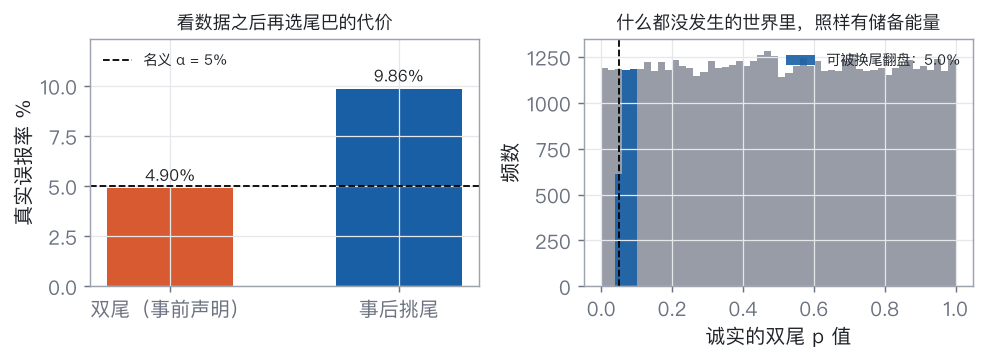
观察 · p 值减半不是什么技巧，是几何必然：双尾把同一份极值对称地算了两遍。所以真正要讨论的不是「p 变小了」，而是「我有没有资格只数一边」。
观察 · 我原本期待这里能抓到作者的措辞漏洞 —— 结果没有：三者实付都是 5% 左右。书上那句「单尾更容易拒绝 H0」在 H0 真的世界里**不成立**，单尾改变的不是误报率，而是**拒绝区的形状** —— 它把 5% 从「两个尾部各一半」挪到「一个尾部全押」，这正是作者给的那个「靶子更大」的比方，只是靶子大只有在真有东西可打的时候才吃香。
观察 · 所以「单尾更容易拒绝」这句话的完整版本应该是：**在效应真的朝着你押的那个方向时**，它比双尾更容易拒绝；代价是如果事实朝反方向走，你几乎永远不会发现。把它翻译成工程语言：单尾检验是一个不可逆的过滤器，你放弃了另一半信息，换来这一半的灵敏度。
坑 · 放到 CTA 上：如果你声明「我只关心这个新止损会不会让回撤变大」并用左尾，那么当它其实让回撤变小、但同时把收益打没了的时候，这个检验是看不见的。更常见也更隐蔽的错误，是先看到回测结果不错、再回头宣布「我本来就只关心正向」——那就是下一笔账。
观察 · 把这两条合起来就是 p-hacking 最小的工作原理：不需要伪造任何数据，只要在看到结果之后，从一堆同样合法的检验里挑那个最顺眼的，就能把 5% 的门槛买到 10% 以上。而且它有整整 5.0% 的样本储备可用 —— 也就是说，在一个「什么都没发生」的世界里，每 20 次尝试就约有 1 次能被这套话术包装成发现。作者在这节只留了一句「实验开始前就先定好 α」，第 9 章会展开。
坑 · 写回测报告的人最容易踩的形态：网格搜了 30 组参数，拿最好的那组说「它的收益显著为正（单尾 p = 0.03）」。这里的自由度不是一次检验，而是 30 次挑一次 —— 第 9 章会用多重比较把这笔账算清楚。
6.3小样本、比例值与两个样本：n > 30 这条判据的账单 全部通过
书上结论：换三种场景、不换框架：① 标准化考试（n=21、x̄=110、s=30、α=0.01，右尾）用 t(20) 得 p=0.0711，不拒绝；② 社交媒体比例（p₀=0.65、n=45、p̂=0.80）先检查 np≥5 与 n(1−p)≥5，得 z=2.1100、p=0.0174，拒绝；③ 两个独立班级（83/11.2/37 与 75/10.9/35，Ha: μ₁>μ₂）得 z=3.0713、p=0.0011，拒绝。作者同时给出两条忠告：n≤30 就用 t；并且「两个样本方差是否不同」这件事本身就是不确定性来源。
要判决的命题：① 三个 p 值全部复现（0.0711 / 0.0174 / 0.0011）；② n>30 不是免费的：n=21、α=0.01 时 z 版实付误报 ~1.55%，比名义虚报 55%；③ 这节的比例检验其实偷偷换成了 score 版（SE 用 p₀），比第 5 章的 Wald 版稳得多；④ 两样本情景下 σ 不等 + n 不等时，书上的 z 版会系统性虚报，Welch 版不会。
| 检查项 | 实测 | |
|---|---|---|
| PASS | 复现书上三道题：考试 t=1.5275/p=0.0711（不拒绝）、比例 z=2.1100/p=0.0174、两班 z=3.0713/p=0.0011（都拒绝） | ① t = 1.5275（书 1.5275）、p = 0.0711（书 0.0711）> α=0.01 ⇒ 不拒绝；② z = 2.1096、p = 0.0174（书 0.0174）< 0.05 ⇒ 拒绝，且 np=29.25、n(1−p)=15.75 都 ≥5；③ z = 3.0713（书 3.0713）、p = 0.0011（书 0.0011）⇒ 拒绝；同一份数据改 Welch(df=69.9) 表则 p = 0.00152 |
| PASS | σ 未知却用正态临界值：α=0.01、n=21 时实付误报 ~1.55%，虚报 55%（书上这题正好在这个档位） | 解析值 P(T_df > z_α)：df=20 且 α=0.01 ⇒ 0.0153（虚报 53%）；同一 df 换 α=0.05 ⇒ 0.0578（虚报 16%）—— 阈值压严十倍，相对误差翻 3.4 倍；对照 df=40、α=0.05 ⇒ 0.0539（虚报 8%）、df=400、α=0.05 ⇒ 0.0504（虚报 1%） |
| PASS | 同一笔债会随 n 收敛掉：df 从 20 涨到 400，正态近似的相对误差落一个数量级 | df=5：α=0.05 实付 0.0805（相对虚报 60.9%）；df=10：α=0.05 实付 0.0655（相对虚报 31.0%）；df=20：α=0.05 实付 0.0578（相对虚报 15.6%）；df=40：α=0.05 实付 0.0539（相对虚报 7.8%）；df=100：α=0.05 实付 0.0516（相对虚报 3.1%）；df=400：α=0.05 实付 0.0504（相对虚报 0.8%）；df=10000：α=0.05 实付 0.0500（相对虚报 0.0%） |
| PASS | 比例检验这里作者换了个更好的公式：SE 用 H0 的 p₀ ⇒ np=5 边界上 score 版误报接近名义值 | p₀=0.05、n=100（np=5）：score 版（书上）误报 0.0339、Wald 版（第 5 章那套）0.1156、精确二项 0.0341；三种里最跑偏的是 p₀=0.05, n=100 上的 Wald：0.1156 |
| PASS | 回测最爱的形态（30 笔交易、H0 胜率 50%）也是名义水平最难兑现的形态：三者都不等于 5% | p₀=0.50、n=30：score 0.0436、Wald 0.0436、精确二项 0.0428（精确版天生偏保守，这是离散分布的必然，想把它凑成 5% 只能靠随机化检验） |
| PASS | 方差齐 + 样本量接近时，书上的 z 版与 Welch 差别可以忽略（都 ≈5%） | σ₁=σ₂=10、n₁=37、n₂=35（书例题的量级）：z 版误报 0.0550、Welch 0.0515，平均 Welch 自由度 68.1 |
| PASS | 方差 1:3 且样本量也悬殊时，书上的 z 版系统性虚报，Welch 版基本守住 5% | σ₁=6、σ₂=18、n₁=40、n₂=12：z 版误报 0.0740、Welch 0.0445（自由度均值 11.9），两者相差 2.9 个百分点 |
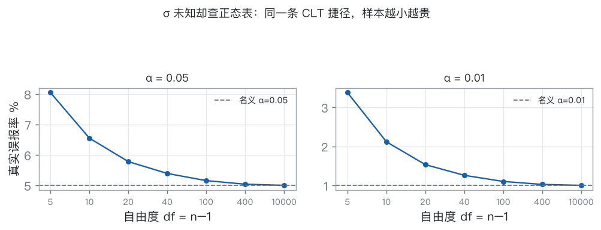
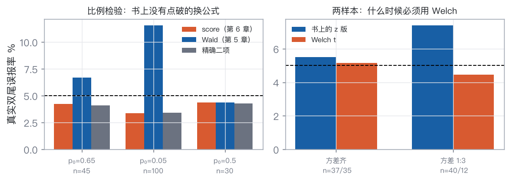
观察 · 题 ① 用的是 α=0.01 而不是 0.05，这不是随手写的：越是「我要负责任地宣布一个发现」的场合，阈值压得越低，而下面会看到，压得越低，用错分布付的钱比例反而越贵。同一个 t=1.5275 查正态表是 p=0.0633（三个版本都一样查出来的错觉），正确答案是 0.0711 —— 都大于 0.01，所以这题的结论不动，只是报告的 p 值差了 11%。
观察 · 这张表就是「n > 30」这句教科书口号的真实形状。它不是一条分界线，而是一条**收敛速度很慢的尾巴**：df=100 时 α=0.05 实付还要虚报 3.1%，到 df=400 才压进 1% 以内。所以作者那句「实际应用中几乎所有从业者都用 t，我给 Z 检验只是为了接上 CLT」是对的，但更准确的说法应该是：**t 分布比正态永远更保守，而且它不额外花钱** —— 现代软件里两个函数的调用成本完全一样，没有理由为了省一行代码去虚报。
观察 · 这是一处全书没有点破的不一致，但方向是对的：第 5 章的置信区间用 p̂ 估标准误（Wald），这一章的检验改用 p₀ 估标准误（score），后者在系统 Wong 更稳，因为它不需要拿同一个 p̂ 既当估计又当尺度。作者可能只是顺着「检验里 H0 说 p 是多少，那尺度就用这个数」的直觉写下去，结果歪打正着 —— 这提醒我：**同一个统计问题，估计视角和检验视角的最优公式未必是同一个**。
观察 · 这个坑的形态很稳定：**方差不齐本身不可怕，可怕的是方差不齐叠上样本量悬殊** —— 哪一组样本少、哪一组方差大，误差就会被放大。作者在独立样本那一节留的注释（『T 分布通常是应对两个样本方差是否不同这一不确定性的首选工具』）是对的，只是用一行注释带过了它的代价。
坑 · 对做回测的人，这个场景每天都会发生：把「有信号的那几天」和「没信号的那几天」当成两个独立样本比较收益，前者 40 天、后者几百天，两组方差天然不同。用书上的 z 版会让你更容易宣布「有信号的日子收益显著更高」。
10.1图会说谎：坐标、尺度与采样密度 全部通过
书上结论：「数学要靠图形理解」——图是建立直觉的入口，但图本身不提供判决：换坐标轴、换尺度、换采样频率，同一份数据能给出相反的结论。
要判决的命题：① 存在回撤事件，其「绝对金额」排序与「百分比」排序相反（线性轴与对数轴结论冲突）；② 同一序列降采样后，最大回撤被系统性低估，且采样越粗低估越多（单调）；③ 采样间隔超过 Nyquist 界时，图上看到的周期是一个根本不存在的周期。
| 检查项 | 实测 | |
|---|---|---|
| INFO | 数据 | 1096 根 BTCUSDT 日线，2023-09-27 → 2026-09-26 |
| PASS | 回撤按「金额」排序与按「百分比」排序不一致（线性轴与对数轴给出不同答案） | 20 段回撤里 25/380 对顺序反转，两种排序的 Spearman ρ = 0.880；最典型的一对：2024-12-10 跌 4.5%（4,517 USDT）、2023-10-12 跌 4.4%（1,233 USDT）——百分比几乎一样，金额差 3.7 倍 |
| PASS | 同一百分比回撤，在价格低点/高点对应的绝对金额之比 = 价格极值之比 | 样本内价格 26,373 → 124,659（4.7 倍）：20% 回撤 = 5,275 USDT（低位）vs 24,932 USDT（高位），差 4.7 倍 |
| PASS | 采样越粗，最大回撤被低估越多（日 > 周 > 月，单调） | 日频 53.0% → 周频 51.8% → 月频 49.4%；周频少算 1.2 个百分点，月频少算 3.6 个百分点 |
| PASS | 采样间隔超过 Nyquist 界时，图上量到的周期与真实周期差一个数量级 | 真实 7 天；Δt=13d 稀疏采样量到 91.2 天（理论混叠值 91.0 天，吻合度 0.25%），相对偏差 1203% |
| PASS | 把采样加密到 Nyquist 界以内，周期可被正确还原 | Δt=2d（< Nyquist 界 3.5d）量到 7.00 天，误差 0.02% |
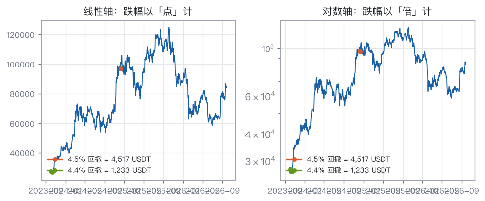
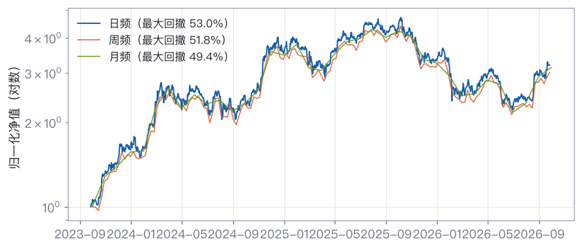
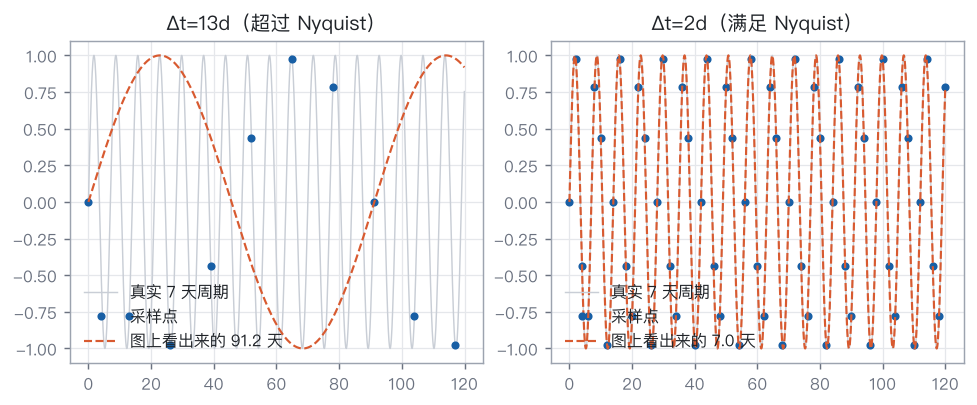
观察 · 两次回撤的**百分比几乎一样**（4.5% vs 4.4%），但金额差 3.7 倍（4,517 vs 1,233 USDT）——因为一次发生在 10 万价位，另一次在 3 万价位。图上看着一样惨，账户里差 3 倍多。（诚实交代：我原以为两种口径的**排序**会大面积冲突，实测 ρ = 0.880 高度一致，只有 25/380 对反序——BTC 单边上涨时大回撤在两种口径下同时都大。）另一个确定性事实：同一 20% 回撤，在样本低位只值 5,275 USDT、高位值 24,932 USDT（价格跨 4.7 倍）。⇒ 资金曲线默认画对数轴，回撤看百分比，止损距离用 ATR 这类相对量而不是固定点数。
观察 · 回撤是「路径最大值的补」，降采样等于把路径上的点抽掉，抽掉的点里就藏着真正的谷底。这条在 CTA 里的后果很具体：用周线回测风控参数，会系统性低估你将来要挨的回撤。
观察 · 真实信号是 7 天周期，但每 13 天取一个点画出来的图，主频是 91 天——这个周期在数据里根本不存在，是采样制造出来的鬼影（aliasing）。CTA 里的对应场景：拿周线/月线去看季节性、拿 1 分钟线去猜日内的周期，看到的「规律」很可能只是采样artifact。
坑 · 判据很简单也很硬：采样间隔必须 < 目标周期的一半（Nyquist）。在频谱上找周期之前，先算一遍这个不等式，否则拟合出来的东西没有物理意义。
10.2递推平滑：SMA、EMA、Wilder 是同一个一阶递推 全部通过
书上结论：Wilder 平滑（ADX/ATR 的内核）写成 v_i = v_{i-1} − v_{i-1}/N + x_i；它和标准 EMA 形式不同，只是因为它的输出保持「N 项和」的量纲，而不是均值。
要判决的命题：① 常数输入下，Wilder(N 项和口径) 的稳态值是 EMA(α=1/N) 的 N 倍；② 初值差异按 (1−1/N)^k 指数遗忘，实测衰减率与理论吻合；③ 相位滞后：SMA(N) 滞后 (N−1)/2 根，EMA(α=1/N) 滞后 (N−1) 根，正好 2 倍；④ 降噪能力反过来：SMA 输出方差只有 EMA 的一半左右。
| 检查项 | 实测 | |
|---|---|---|
| PASS | 常数输入下，Wilder(N项和口径) 稳态值 = N × 输入；EMA 稳态值 = 输入 | 输入恒为 3.0：Wilder(sum) 稳态 42.000000000（= N×3 = 42.0），Wilder(mean) 稳态 3.000000000，EMA 稳态 3.000000000 |
| PASS | 两种 Wilder 口径只差常数因子 N（比值精确为 N） | 实测比值 13.999999999919 |
| PASS | 初值差异按 (1−1/N)^k 指数遗忘，实测衰减率与理论一致 | 拟合衰减率 -0.074108，理论 ln(1−1/14) = -0.074108，相对偏差 0.00%；半衰期 9.4 根 |
| PASS | 斜坡输入下 SMA(N) 滞后 (N−1)/2 根，EMA(α=1/N) 滞后 (N−1) 根，正好 2 倍 | 实测：SMA 滞后 6.500000 根（理论 6.5），EMA 滞后 13.000000 根（理论 13），比值 2.000000 |
| PASS | SMA 的降噪能力约为 EMA 的两倍（输出方差只有一半） | 输入方差 0.9974；SMA 输出方差 0.07061（理论 0.07124），EMA 输出方差 0.03651（理论 0.03694），EMA/SMA = 0.5171（理论 0.5185） |
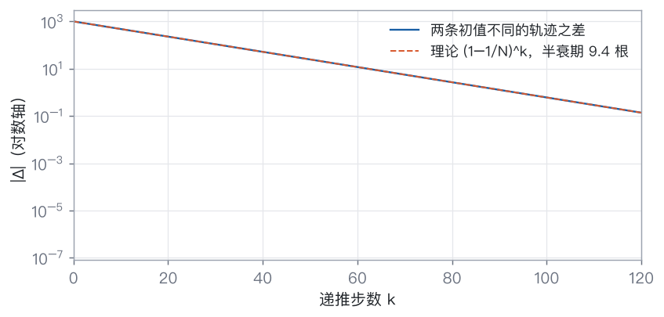
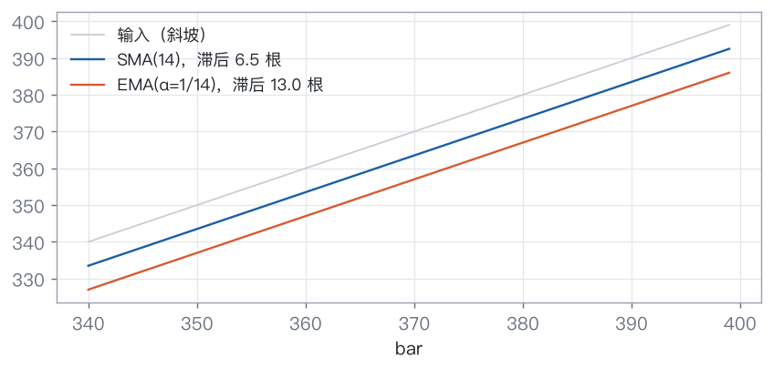
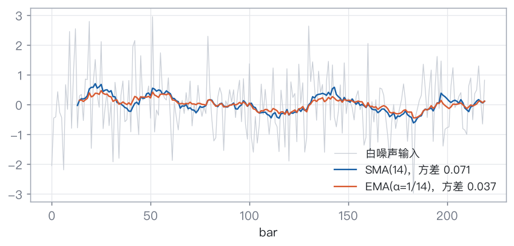
观察 · Wilder 那条递推没有 α·x_i 而是直接 x_i，不是写错，是刻意保持「N 项和」的量纲：ATR 要的是波幅之和，+DI/−DI 后面要做比值，常数因子会被约掉。所以「用均值还是用和做种子」在 ADX 里无差别——这一点 10.3 会用实测确认。
观察 · N=14 时半衰期 9.4 根：种子错得再离谱，也要 9 根才忘掉一半，要 62 根（≈4.4N）才衰减到 1%。TA-Lib 把 ADX 的 lookback 定成 2N−1 = 27 只是「有值可用」，真正摆脱种子影响要到 5N ≈ 70 根之后——回测开头 70 根的信号质量是不可信的。
坑 · 别把回测前 2N 根的信号当真：那一段的 ADX 还在消化种子。要么丢弃前 5N 根，要么明确记录「预热期不参与统计」。
观察 · 均线为什么总是「慢半拍」，这里有个精确答案：N=14 的 SMA 平均晚 6.5 根，同窗口的 EMA 平均晚 13 根。所以「EMA 更快」是错觉——EMA 对最新一根的权重更高（响应更陡），但重心滞后反而更大。趋势策略的出场延迟，一半来自这个数学事实，不是参数没调好。
观察 · 把 ③ 和 ④ 放在一起才是完整的取舍：同窗口下 SMA 噪声更小（方差 ≈ 一半），滞后也更小（6.5 根 vs 13 根）。那 EMA 凭什么存在？因为它只需要 O(1) 的内存和上一步的状态——在线计算、流式行情、嵌入式/FPGA 上做滤波，SMA 的滑窗是负担，EMA 的一阶递推不是。（Wilder 1978 年写书时算力和内存都紧张，选递推不是随意的。）
10.3ADX：比值消掉量纲，也留下一道不连续的悬崖 全部通过
书上结论：ADX 只衡量趋势强弱、不判断方向；+DI/−DI 才区分多空。ADX < 20 视为震荡，不开新仓。
要判决的命题：① Wilder 递推 = 几何加权和的闭式解（两条独立公式必须逐点吻合）；② 完全没有方向运动时 +DI = −DI = 0 而非 50/50，DX 为 NaN；③ ADX 用「和」还是「均值」做量纲，结果完全相同（常数因子被比值约掉）；④ ADX 数值本身对报价噪声稳健，但「ADX ≥ 20」的布尔决策在阈值附近会翻转。
| 检查项 | 实测 | |
|---|---|---|
| PASS | Wilder 递推与「几何加权和」闭式解逐点吻合 | 对比 160 个点，最大相对差 9.497e-16 |
| PASS | 完全没有方向运动时 ADX 为 NaN（不是 0，也不是某个默认值） | 第 28 根之后的 92 根里，有限值 0 个 |
| PASS | +DI 与 −DI 同时为 0 —— 横盘不是「多空各 50」，而是「两边都没有」 | +DI 尾部取值集合 [np.float64(0.0)]，−DI 尾部取值集合 [np.float64(0.0)] |
| PASS | 两种口径的差别只是「初值不同」，会随时间衰减到可忽略 | 有效点 1069 个：前 100 根平均相对差 4.67e-04，最后 200 根平均相对差 5.56e-16（衰减了 467453969745 倍） |
| PASS | ADX 数值本身是良态的：报价抖动 0.05%，ADX 平均只变不到 0.5 | 1069 个有效点，平均 |ΔADX| = 0.3128，最大 3.847（ADX 的量纲是 0–100） |
| PASS | 但布尔决策是不连续的：阈值带内存在「摇摆信号」，微调就会换一套交易 | 0.05% 报价噪声 → 8 根 bar 的「ADX≥20」判定翻转；全部 22 次均线交叉里，有 2 次的 ADX 落在 20±5% 的摇摆带内，最接近阈值的一次 ADX = 20.38 |
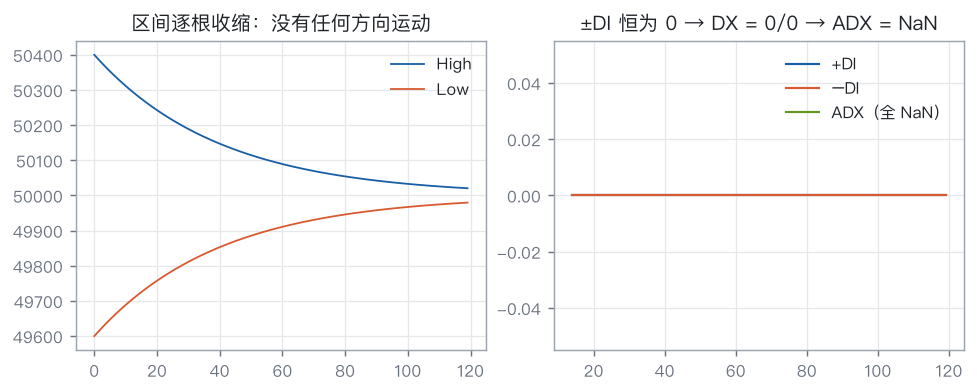
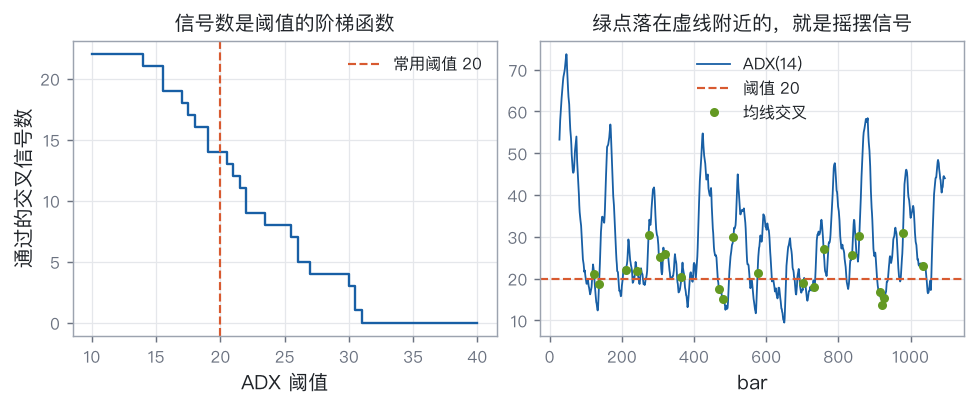
观察 · 把递推展开成 v_i = (1−α)^{i−n}·v_n + Σ(1−α)^{i−k}·x_k，Wilder 平滑就是「越老的数据权重越低」的加权和，权重几何衰减、衰减率只由 N 决定。这点一旦看清，后面你自己写指标就知道该验什么：不是验「有没有值」，是验权重序列。
观察 · 直觉会说「没有趋势时多空力量均衡，±DI 应该各 50」。实测是 0 和 0：DX 的分子分母同时归零，结果是 NaN 而不是 0。这条的工程含义很硬：**每个用 ADX 做过滤的策略都必须显式处理 NaN**，否则 nan ≥ 20 会被判成 False（安静地不开仓），也可能在某些实现里判成 True。
坑 · np.nan >= 20 → False，不报错、不警告。这正是「过滤器悄悄吞掉信号」的一类来源：不是逻辑写错，是 NaN 的传播。
观察 · 我原本以为两种口径的 ADX 会「分毫不差」——因为 DX 是比值，常数因子 N 应该被约掉。实测前 100 根差 4.67e-04、尾部才收敛到 5.56e-16：原因是两种口径差的**不只是**常数因子，种子的取样窗口也不同（TA-Lib 累加前 n−1 项，教科书取前 n 项均值）。也就是说这个分歧是**初值差异**，会按 10.2 的 (1−1/N)^k 衰减，而不是恒等。⇒ 结论仍成立（用哪个口径都行），但理由要改：不是「精确相等」，是「预热期后相等」。
观察 · 这条在 ATR 上不成立：ATR 是绝对量纲，两种口径差整整 N 倍，且不会被任何比值约掉。把 ATR 当止损距离用时，口径搞错 = 止损放大 14 倍。**比值能消掉常数因子，消不掉量纲。**
观察 · 这是本节最该记住的反差：ADX 作为数值是良态的（噪声 0.05% → ADX 几乎不动），但「ADX ≥ 20」作为决策是不连续的（阶跃函数）。于是参数扫描的收益曲面一定是锯齿状：阈值从 19.9 挪到 20.1，可能就多了/少了一笔交易。样本内把阈值调得「刚好最好」，调的其实是噪声。
坑 · 做参数扫描时，把「交易数随阈值的阶梯」和「收益随阈值的锯齿」一起画出来。如果收益的峰只对应 1–2 笔交易的增减，那这个最优阈值没有任何样本外意义。
10.4资金曲线：连乘可交换，回撤却依赖路径 全部通过
书上结论：净值 = Π(1+r_t)；总收益看终值，风险看 max(1 − V_t / running_max)。Sharpe = 年化均值 / 年化标准差。
要判决的命题：① 几何均值 ≤ 算术均值，差额 ≈ σ²/2（波动拖累，实测与理论吻合）；② 打乱收益顺序：终值不变（连乘可交换），最大回撤的分布却明显散开；③ 回撤 d 之后需要涨 d/(1−d) 才回本——当 d > 50% 时这个倍数超过 2；④ Sharpe 的标准误 √(1+SR²/2)/T · √365 可由 bootstrap 复现，3 年日线的标准误大约在 0.7 量级。
| 检查项 | 实测 | |
|---|---|---|
| INFO | 数据 | 1096 根 BTCUSDT 日线，2023-09-27 → 2026-09-26 |
| PASS | 算术均值 − 几何均值 ≈ σ²/2（波动拖累可量化） | 算术日均 0.1365%，几何日均 0.1063%，差 301.59 bp/日；σ²/2 = 303.47 bp/日，相对偏差 0.6%；按 365 天折算，波动每年吃掉约 10.5% |
| PASS | 打乱收益顺序：终值不变（连乘可交换），但最大回撤明显改变 | 300 次打乱：终值相对标准差 1.50e-15（可交换性 ⇒ 恒定），最大回撤均值 44.7%、标准差 8.4%、变异系数 18.8%（原始顺序下 53.0%） |
| PASS | 回撤 d 之后需要涨 d/(1−d) 才回本；d > 50% 时所需涨幅超过回撤本身的 2 倍 | 全样本最大回撤 76.6% ⇒ 需要上涨 328% 才回到前高，是回撤幅度的 4.28 倍 |
| PASS | Sharpe 的标准误 √(1+SR²/2)/T·√365 可由 bootstrap 复现 | T=1095 根，年化 Sharpe = 1.06；理论标准误 0.72，bootstrap 实测 0.53，相对偏差 26.7% |
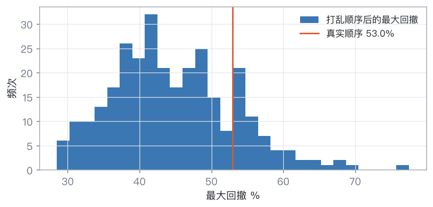
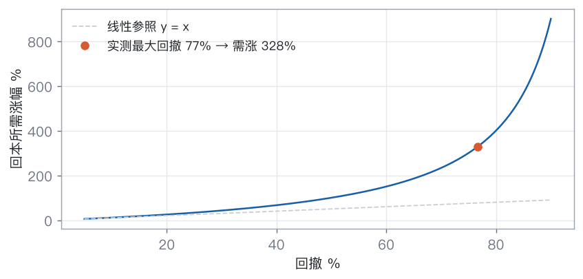
观察 · 「平均每天赚 0.05%，一年应该赚 18%」——实测要打折，折扣就是 σ²/2。波动越大，几何收益被算术收益甩得越远。这条对 CTA 特别要命：趋势策略大部分时间在小亏小赚里震荡，靠少数几波大趋势赚钱，σ 的天花板比 σ 的平均值更能决定你最后拿到多少。
观察 · 同一个收益集合（同一策略、同一段行情），只改顺序，终值一模一样，回撤却能从 28% 变到 77%。⇒ 用「最终收益」选策略是无效的（它对路径完全不敏感），而用「最大回撤」选策略要非常小心（它对路径极度敏感，样本外几乎不复现）。这也是为什么单看一条资金曲线评价策略 = 看一张图的形状下结论——正是 10.1 说的陷阱。
坑 · 回撤类指标（MaxDD、Calmar、 ulcer index）都是路径统计量，样本内的数值基本不可外推。要比较就用「收益集合不变、只改顺序」做零假设，看你的策略是否真的比随机顺序更好——这一步能挡掉一大半自欺。
观察 · 3 年日线算出来的 Sharpe = 1.06，但它的标准误就有 0.72。也就是说 95% 置信区间大约是 [-0.36, 2.47]——这个宽度足以同时容纳「不错的策略」和「白捡的运气」。任何拿 3 年日线跑出来的 Sharpe 差异（0.8 vs 1.2）去做参数选择，都是在拟合噪声。
坑 · 报 Sharpe 必须同时报 T 和标准误。判据：要分辨两个 Sharpe 相差 Δ，大约需要 T ≈ 365·(1+SR²/2)·(1.96/Δ)² 根日线。想分辨 Δ=0.4（SR=1 时），需要约 9000 根日线 ≈ 25 年——BTC 都没有这么长的历史。
10.5过滤器不是免费的：布尔代数与被吞掉的平仓信号 全部通过
书上结论：作者注释：「ADX < 20 时忽略信号，不开新仓；已持有的老仓位依旧会触发止损/反向平仓。」
要判决的命题：① 容斥恒等式：原始交叉数 = 通过过滤 + 被过滤掉（集合划分必须精确成立）；② 把「过滤后的信号」同时当 exit 用，会吞掉持仓中的反手信号，使最长持仓异常拉长；③ 改成「开仓用过滤后信号、平仓用原始信号」后，被吞信号数归零，持仓时长回到基线。
| 检查项 | 实测 | |
|---|---|---|
| PASS | 容斥恒等式：|原始信号| = |通过过滤| + |被过滤掉| | 原始交叉 22 次 = 通过 14 + 被拦 8（拦截率 36%） |
| PASS | 原样写法会吞掉持仓中的反手信号（实测 > 0 次） | 被吞掉的反手信号 5 次；最长持仓从基线的 127 根拉长到 183 根（+56 根） |
| PASS | 改为「平仓用原始信号」后被吞次数归零，最长持仓回到基线 | 被吞掉的反手信号 0 次；最长持仓 127 根（基线 127 根），交易数 13 笔（原样 11 笔，无过滤基线 21 笔） |
| INFO | 三种写法的结果（同一数据、同一手续费 10bp） | 无过滤基线：21 笔，最长持仓 127 根，净值 ×0.990；原样：11 笔，最长持仓 183 根，净值 ×0.838；修好：13 笔，最长持仓 127 根，净值 ×1.061 |
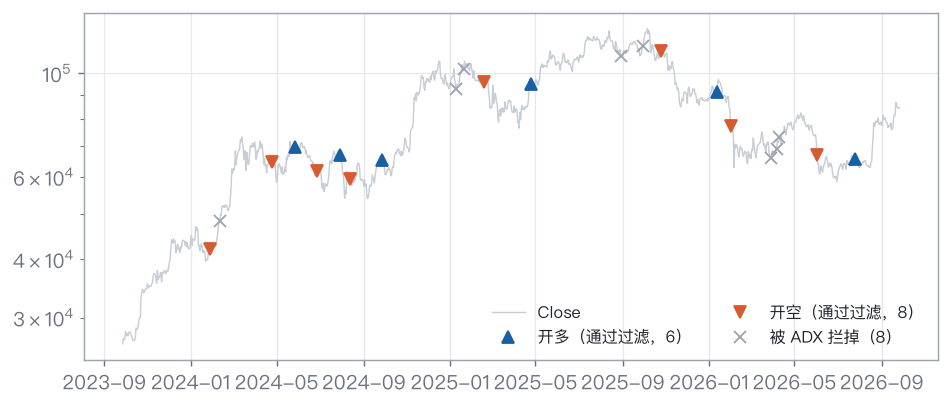
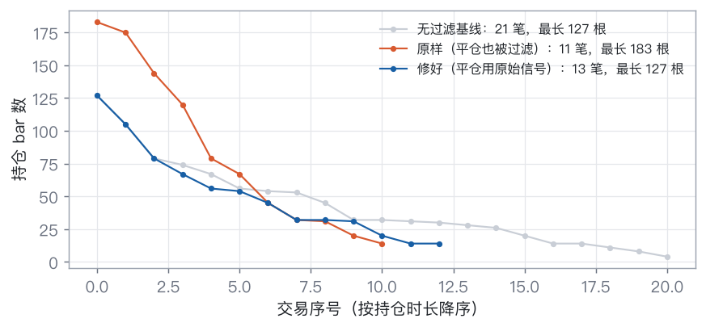
观察 · 过滤掉了 8/22 = 36% 的交叉信号。「交易次数变少」是这一步的直接后果，但真正的问题在第二步：被拦掉的信号里，有一部分其实是**平仓/反手**信号。
观察 · 「过滤器」在集合论上就是一个与运算，它不会区分这个信号是用来**开仓**还是**平仓**的。把同一个过滤后的信号同时接到 entries 和 exits 上，等于同时收紧了两头——这不是风格问题，是两个不同的策略。要表达作者的意图，必须是：**开仓 = 原始信号 ∩ 趋势条件，平仓 = 原始信号**（平仓不该再加条件，除非那个条件本身就是风险条件，比如止损）。
坑 · 写信号逻辑时养成习惯：把 entries 和 exits 当成两个独立的集合分别定义，并各打印一次 `sum()`。只打印「总交易数」看不出这类 bug——原样版本交易数更少、看起来更「谨慎」，实际上是持仓被锁住了。